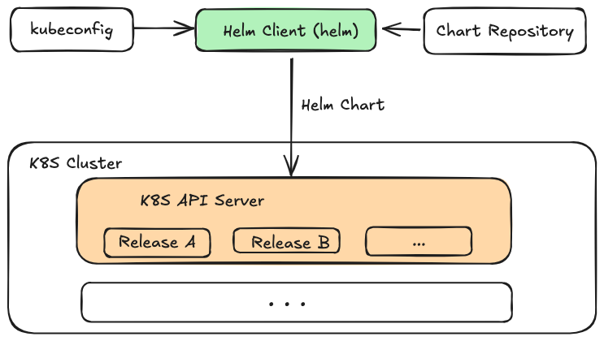
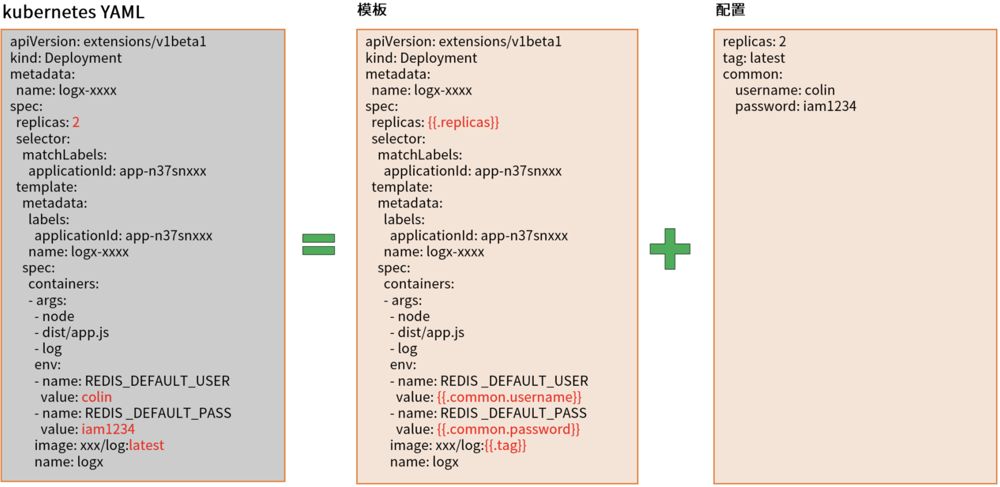
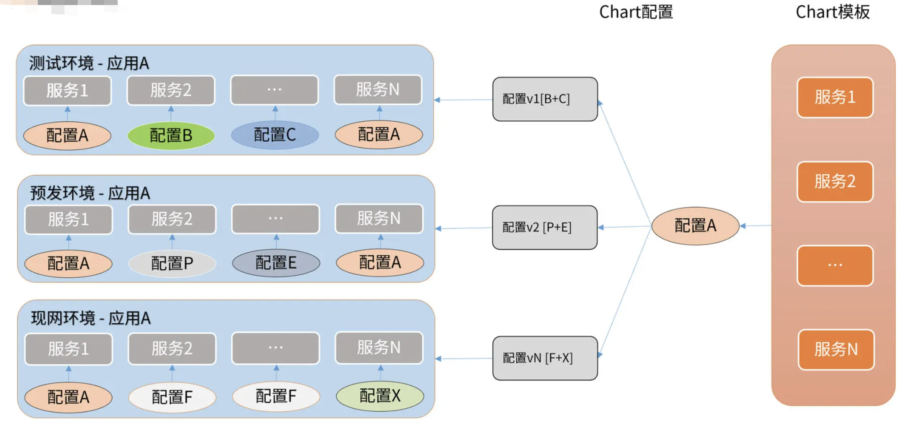

k8s包管理工具Helm的使用
Helm概述¶
基本信息¶
- Github地址：Helm
- 文档地址
- 当前最新版本v3.15.4，当前Star数26.6k.
- Chart包托管平台：ArtifactHub
Helm是什么？¶
Helm是Kubernetes（K8S）的包管理工具，Helm主要是用来管理Chart包，类似于Python的pip、CentOS的yum、MacOS的brew等。Helm主要有三大基本概念，分别为：
- Chart: 代表一个Helm包，它包含了在K8S集群中运行的应用程序、工具或服务所需要的所有YAML格式的资源定义文件以及这些资源的配置，可以通过Helm Chart包来整体维护这些资源。
- Repository：它是用来存放和共享Helm Chart的地方，类似于存放源码的Github的Repository，以及存放镜像的Docker的Repository。
- Release: 它是运行在K8S集群中的Chart的实例。一个Chart通常可以在同一个集群中安装多次。每一次安装都会创建一个新的Release。
Helm也提供了一个helm命令行工具，该工具可以基于Chartb包一键创建应用，在创建应用时，可以自定义Chart配置。应用发布者可以通过Helm打包应用、管理应用依赖管理，管理应用版本、并发布应用到软件仓库。
- 对于使用者来说，使用Helm后不需要写复杂的应用部署文件，可以非常方便的在K8S上查找、安装、升级、回滚以及卸载应用程序。
Helm架构¶

Helm Client（helm命令）和Helm Chart包时核心，helm命令可以从Chart Repository中下载Helm Chart包，读取kubeconfig文件，并构建kube-apiserver REST API 接口的HTTP请求，通过调用K8S提供的REST API 接口，将Chart包中包含的YAML格式定义的K8S资源，在K8S集群中创建， 这些资源以Release的形式存在与K8S集群中，每个Release 又包含多个K8S资源，如Deployment、Pod、Service等。
Helm组成¶

-
模板文件
- 【通常有多个】，基于
text/template模板文件，提供了强大的模板渲染能力。Helm可以将配置文件中的值渲染进模板文件中，最终生成一个可以部署的K8S YAML格式的资源定义文件。
- 【通常有多个】，基于
-
配置文件
- 【通常有一个】
总结：
- 在Helm中，部署一个应用可以简化为Chart模板（多个服务）+ Chart配置 —> 应用。
- Chart模板一个应用只用编写一次，可以重复使用，再部署时，可以指定不同的配置，从而将应用部署到不同环境或同一环境部署不同配置的应用。

Helm安装¶
先决条件¶
- 一个可用的K8S集群
- 确定安装版本和安全配置
- 安装和配置Helm
安装
- 官方安装指南
- Helm 各个版本安装包：Helm Releases
安装步骤¶
安装helm命令自动补全脚本（非必须）
| Bash | |
|---|---|
- 执行 helm comp，就会自动补全为helm completion。
Helm使用¶
Helm常用命令汇总¶
| 命令 | 描述 |
|---|---|
| completion | 生成指定Shell的自动补全脚本，比如bash、zsh等 |
| create | 创建一个 Chart 并指定名字 |
| dependency | 管理 Chart 依赖 |
| env | 打印Helm客户端的环境变量信息，例如HELM_CACHE_HOME、HELM_NAMESPACE、HELM_REPOSITORY_CONFIG等 |
| get | 下载一个 Release。可用子命令：all、hooks、manifest、notes、values |
| help | 打印helm命令的帮助信息 |
| history | 获取 Release历史 |
| install | 安装一个 Chart |
| lint | 检查一个Chart包，并打印潜在的问题 |
| list | 列出 Release |
| package | 将 Chart 目录打包到 Chart 存储文件中 |
| plugin | Helm插件 |
| pull | 从远程仓库中下载 Chart 并解压到本地，例如helm pull stable/redis --untar |
| repo | 添加（add）、列出（list）、移除（remove）、更新（update）和索引（index）Chart 仓库 |
| rollback | 从之前版本回滚 |
| search | 根据关键字搜索 Charts，可用子命令：hub、repo |
| show | 查看 Chart 详细信息。可用子命令：all、chart、readme、values |
| status | 显示已命名版本的状态 |
| template | 本地呈现模板 |
| test | 在 Release 中运行 Helm 中的预定义测试 |
| uninstall | 卸载一个 Release |
| upgrade | 更新一个 Release |
| verify | 验证给定路径的Chart是否已被签名且有效 |
| version | 查看 Helm 客户端版本 |